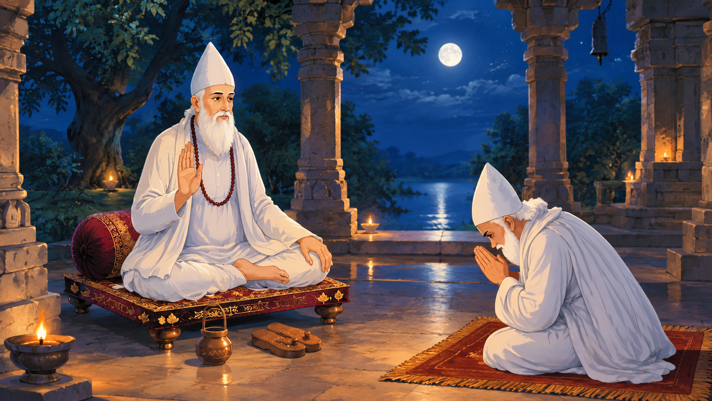

साहब बंदगी साहेब · कबीरपंथ का मूल अधिष्ठान
सदगुरु कबीर साहेब एवं धनी धर्मदास वंशावली — कबीरपंथ का यथार्थ एवं सर्वोच्च स्वरूप
इतिहास में अलौकिक आध्यात्मिक घटनाएँ तभी घटती हैं, जब एक ज्ञानी गुरु और विवेकी परम शिष्य का दिव्य मिलन होता है। कबीरपंथ वस्तुतः अनादि सतपुरुष सदगुरु कबीर साहेब के परम ज्ञान और उनके लाड़ले, अनन्य भक्त धनी धर्मदास साहेब के अगाध समर्पण एवं विवेक का पावन संगम है। संसार में स्थापित चार गुरु-गद्दियों में सदगुरु कबीर साहेब ने केवल धनी धर्मदास साहेब को ही 'मुक्त राज' और 'अटल ब्यालीस वंश' का अमर अधिकार प्रदान किया। धनी धर्मदास साहेब कबीर साहेब के भक्ति के साक्षात अंग हैं—तीनों लोकों में उनका स्थान कोई दूसरा नहीं ले सकता। उन्हीं की पावन वंश परंपरा आज कबीर धर्मनगर दामाखेड़ा के माध्यम से समस्त विश्व में कबीरपंथ की वास्तविक पहचान बनी हुई है।

एक नज़र में — कबीरपंथ के चार प्रमुख आधार
पंथ के मूल सत्य और आध्यात्मिक प्रवाह को विस्तार से समझें।


“चार गुरु संसार में, धर्मदास बड़े अंश।
मुक्त राज लिख दीन्हिया, अटल ब्यालीस वंश॥”
सदगुरु कबीर साहेब ने स्वयं स्वीकार किया कि संसार में चार दिशाओं में चार गुरु-गद्दियाँ स्थापित हुईं, परंतु धनी धर्मदास साहेब उनके हृदय के सबसे बड़े अंश और भक्ति के साक्षात स्वरूप हैं। काल-निरंजन के महाजाल से जीवों को सदा-सदा के लिए मुक्त कराने का 'मुक्त राज' केवल धर्मदास साहेब के 42 वंशों को ही प्रदान किया गया। यही कबीरपंथ का सनातन और प्रामाणिक सत्य है।
कबीरपंथ का यथार्थ स्वरूप: सदगुरु कबीर साहेब एवं धनी धर्मदास साहेब
विस्तृत, प्रामाणिक एवं ग्रंथ-सम्मत विवेचन — कोई संक्षिप्त सार नहीं, बल्कि सम्पूर्ण आध्यात्मिक सत्य।
ज्ञानी गुरु और विवेकी शिष्य का अलौकिक मिलन
आध्यात्मिक इतिहास साक्षी है कि जब तक सर्वोच्च सत्य का साक्षात्कार कराने वाले 'ज्ञानी गुरु' और उस ज्ञान को पूर्ण निष्कपटता व समर्पण से आत्मसात करने वाले 'विवेकी परम शिष्य' का मिलन नहीं होता, तब तक युग-परिवर्तनकारी पंथ का आविर्भाव नहीं हो सकता। सदगुरु कबीर साहेब अनादि ज्ञान के असीम सागर थे, और धनी धर्मदास साहेब उस ज्ञान को धारण करने वाले विवेक के परम पात्र बने। जब बांधवगढ़ की पावन भूमि पर दोनों महाविभूतियों का मिलन हुआ, तो धर्मदास साहेब ने अपनी विपुल सांसारिक धन-संपदा, मान-प्रतिष्ठा और अहंकार को एक क्षण में सद्गुरु के चरणों में न्यौछावर कर दिया।
इसीलिए सदगुरु कबीर साहेब ने उन्हें सांसारिक धनी नहीं, बल्कि 'नाम-धन और भक्ति-धन' का सच्चा स्वामी मानकर 'धनी' की अमर उपाधि से अलंकृत किया। अनुराग सागर में सतपुरुष कबीर साहेब स्वयं कहते हैं कि धर्मदास साहेब उनके हृदय का वह पावन अंश हैं जिनका स्थान तीनों लोकों में अन्य कोई भी शिष्य या साधक कभी नहीं ले सकता।
चार गुरुओं में 'मुक्त राज' और 'अटल ब्यालीस वंश' का एकाधिकार
सदगुरु कबीर साहेब ने लोक-कल्याण के लिए चार दिशाओं में चार गुरु नियुक्त किए थे—पश्चिम में चतुर्भुज जी, उत्तर में बांके जी, दक्षिण में ज्ञान जी, और पूर्व एवं मध्य में स्वयं धनी धर्मदास साहेब। परंतु पंथ-ग्रंथों और कबीर वाणी (पृष्ठ 116) के अनुसार अन्य तीनों शाखाओं की अवधि परिमित (27, 16 और 7 पीढ़ियों तक) नियत की गई थी। केवल और केवल धनी धर्मदास साहेब को ही 'मुक्त राज' (जीवों को भवसागर से पार उतारने का सर्वाधिकार) और 'अटल ब्यालीस वंश' की अविचल परंपरा सौंपी गई।
यही कारण है कि आज विश्व भर में 70 प्रतिशत से अधिक कबीरपंथी समाज कबीर-धर्मदास वंशावली के ही पावन छत्रछाया में साधनारत है। दामाखेड़ा की पावन वंशगद्दी इसी 42 वंश की जीवंत ज्योति है, जहाँ वर्तमान में 16वें वंशाचार्य पंथ श्री हुजूर उदितमुनि नाम साहेब संपूर्ण विश्व में सतनाम का प्रचार-प्रसार कर रहे हैं।
कबीरपंथ के 15 पावन तीर्थ धाम (सांस्कृतिक व आध्यात्मिक परिक्रमा)
आधिकारिक वंशावली प्रतिनिधि सभा द्वारा मान्यता प्राप्त यह 15 पावन स्थल कबीरपंथ की ऐतिहासिक धरोहर और भक्ति के जीवंत केंद्र हैं:
पंथ के विभिन्न आयाम
हर विषय का गहरा, प्रमाणिक एवं विस्तृत विवरण — अपनी रुचि अनुसार चयन करें।


ताज़ा जानकारी
सार्वजनिक समाचार स्रोतों पर आधारित हाल की मुख्य बातें।
SKDV मिशन ऐप का नया अपडेट
Google Play लिस्टिंग के अनुसार ऐप का हाल का अपडेट 24 जुलाई 2026 का है। स्रोत
628वाँ सदगुरु कबीर साहेब प्राकट्य उत्सव
ज्येष्ठ पूर्णिमा पर बस्तर सहित छत्तीसगढ़ में कई स्थानों पर आयोजन; रायपुर के कबीरधाम आमलेश्वर में दो-दिवसीय उत्सव। स्रोत
नवोदय यात्रा — देवळाली प्रवरा (महाराष्ट्र)
हुजूर उदितमुनि नाम साहब के सान्निध्य में स्वागत यात्रा, प्रवचन-दर्शन और महाप्रसाद। स्रोत
दामाखेड़ा अब “कबीर धर्मनगर दामाखेड़ा”
छत्तीसगढ़ सरकार की अधिसूचना के बाद आधिकारिक नाम बदला। स्रोत
16वें वंशाचार्य का चादर तिलक
बसंत पंचमी के दिन दामाखेड़ा में हुजूर उदितमुनि नाम साहब का चादर तिलक; इसी दिन से माघ पूर्णिमा संत समागम शुरू। स्रोत


झलकियाँ
आयोजनों और स्थलों की तस्वीरें (आप अपनी तस्वीरों से बदल सकते हैं)।


आधिकारिक चैनल से — सीधे यहीं देखें
नीचे के प्लेयर में आधिकारिक YouTube चैनल के नए वीडियो चलते हैं।
वीडियो चलाने के लिए साइट को इंटरनेट पर होस्ट करें या README में बताए अनुसार local server से खोलें।
आधिकारिक लिंक
दान, पंजीकरण या कार्यक्रम की पुष्टि के लिए हमेशा इन्हीं स्रोतो पर भरोसा करें।